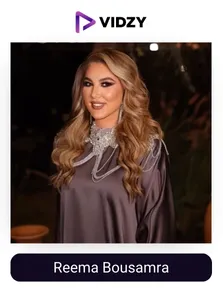
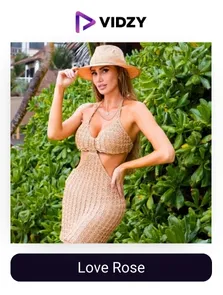
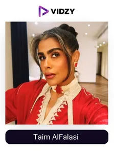
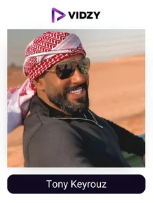
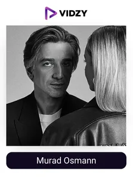
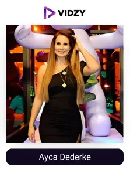
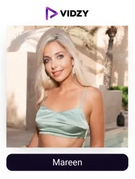
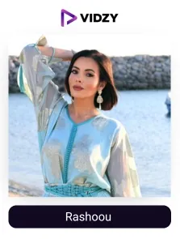
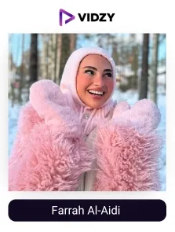
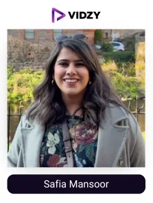

Dubai is a luxury travel destination that has emerged as the content creators’ paradise. It has strategically positioned itself as the heart of the global tourism arena, fascinating millions of tourists. It attracts a new generation of travel UGC content creators who help people discover, experience, and choose where to travel next.
But when it comes to choosing a memorable travel destination is an overwhelming task. With endless options, overwhelming search results, and over-polished travel ads, travel enthusiasts often feel lost when deciding where to go. People no longer trust generic travel brochures—they crave real-time experiences from real people behind the glossy pictures. Because people seek authenticity, they trust genuine experiences that offer relatable insights that brochures simply can't match. Like the way they believe their peers and ancestors. They want genuine recommendations, not scripted promotions. According to Nielsen, 92% of consumers trust user-generated content more than traditional ads.
In this shift of authentic consumer preference, Travel UGC creators play a vital role in helping travel enthusiasts choose their dream destination within budgets, as an authentic travel experience guide; additionally, they give tips for exploring regional culture and food. With their raw, unfiltered, and personal experiences, these creators have become a lighthouse in the dark for global travelers. When talking about Dubai, there is a range of UGC-worthy experiences and destinations, from ultra-luxury to deeply cultural.
They illuminate the golden sands of the desert, record-breaking attractions, desert adventures, rich heritage, futuristic skylines like Burj Khalifa, luxury hotels, white beaches, and destinations like Ski Dubai and Dubai Dolphinarium, where every corner is a travel opportunity. Famous travel influencers in Dubai have dedicated their whole lives to becoming wanderers, digital nomads, and gipsies. Their Instagram stories, YouTube vlogs, and TikTok reels are the modern-day travel guides, helping potential visitors feel, see, and believe in what Dubai truly offers.
Brands have recognized this authentic influence, which is why more and more travel brands in Dubai are partnering with top travel UGC creators to drive genuine engagement. A great example is Emirates’ “Be There” campaign, where real travelers documented their journeys across Dubai. The UGC-based content helped the brand build trust and excitement among global audiences.
Recognizing the growing need for reliable collaborations, our team at the leading UGC agency in Dubai has done extensive industry research to present our handpicked list of top Emirati travel UGC creators in Dubai.
List of the Top Travel UGC Creators in Dubai, UAE 2025
Contents
-

1. Reema Bousamra
Channel: Reema Bousamra
Followers: 6.4 MEngagement Rate: 1.68 %About The Influencers-
Reema Bousamra is one of the top travel UGC content creators in Dubai. She shares aspirational travel UGC-based content showcasing stunning global destinations, premium resorts, fashion-forward outfits, and elite experiences. Her storytelling approach differs from others. She has collaborated with prestigious brands such as Gucci, Dior, Dolce & Gabbana, Four Seasons, Schiaparelli, Burberry, and Emirates. Her content is power-driven by high-end aesthetics and authentic emotions as she wrote in her recent post, “Life is like a camera, just focus on what’s important, capture the good times, develop from negativities, and if things don’t turn out, just take another shot”. Her consistency in postings drives engagement, specifically through immersive travel guides, hotel reviews, and destination recommendations. In 2024, she was featured in Forbes Middle East’s "Top 20 Influencers to Watch."
-

2. Love Rose
Channel: Love Rose
Followers: 5.9 MEngagement Rate: 2.45%About The Influencers-
Liubava Rose, a Dubai-based travel UGC content creator, is renowned for her dreamy aesthetic and heartfelt storytelling. Her travel content rotates around romantic locations, fashion editorials, wellness travel, boutique hotels, spa retreats, detailed vlogs, city tours, and exclusive resorts. Her feed emphasizes providing valuable travel tips and motivational insights. She runs a charity by the name ‘Save in Yourself Humanity’. She has collaborated with high-profile brands like L'Officiel Arabia, Garimonroferos, Waldorf Astoria, Dior, and Qatar Airways.
As per her recent posts, “Neither advice, nor logic, nor past experience helps. I tried all the options, but each one seems false, as if all paths lead to the same dead end. Living in the old way is disgusting and sickening, but how to live in a new way, you do not yet know. And then the moment of surrender comes, not a beautiful, spiritual capitulation, but a breakdown of some structure inside”. Recently, she launched her travel planning service, serving luxury enthusiasts with desired immersive experiences. She has also been featured in L’Officiel Arabia.
-

3. Taim AlFalasi
Channel: Taim AlFalasi
Followers: 4.7MEngagement Rate: 1.05%About The Influencers-
Futaim AlFalasi pursued media studies at Zayed University, where she graduated with a degree in visual communications. Commonly known as Taim AlFalasi, is an Arabic-speaking travel UGC content creator in Dubai. Her captions and stories are mainly in the Arabic language. She launched her online magazine, Yolomagazine, and introduced her radio show, The Taim Show, which drove significant watch-time with over 40,000 plays per episode. Then she started, sharing her experiences in Dubai's malls and eateries. She also became a brand ambassador for major companies like Etisalat.
She works with brands like: 𝐌𝐞𝐫𝐜𝐞𝐝𝐞𝐬-𝐁𝐞𝐧𝐳 𝐌𝐢𝐝𝐝𝐥𝐞 𝐄𝐚𝐬𝐭, Latafa Perfumes, Activia Arabia, Flynas, Arabian Oud, and more. Taim was also awarded the Most Influential Young Leader in 2023.
-

4. Tony Keyrouz
Channel: Tony Keyrouz
Followers: 3.2 MEngagement Rate: 3.54%About The Influencers-
Tony Keyrouz is one of the licensed travel UGC creators in Dubai who has become a go-to figure for luxury brands, tourism boards, and automotive giants. His content is a blend of exotic travel locations, luxury vehicles like high-octane supercars & yachts, and upscale lifestyle experiences. With splendid photography and videography, as well as visual storytelling, his produced UGC is considered by travel enthusiasts all over the world. He has collaborated with Lamborghini, BRABUS, Ferrari, Ritz-Carlton, and Visit Dubai campaigns.
In 2024, he won the "Best Automotive Influencer in the Middle East" award.
-

5. Murad Osmann
Channel: Murad Osmann
Followers: 3.2MEngagement Rate: 2.22%About The Influencers-
Murad Osmann is recognized worldwide for breathtaking pictures and videos that are based on originality and the soul of a particular place. His globally viral #FollowMeTo project explores the breathtaking locations around the world. He creates user-generated content for tourism boards, luxury hotels, and high-fashion brands like Chanel and Cartier. His work has been featured in TIME’s list of the "Top 5 Most Influential Travel Photographers”. He also enlightens traditional souks and the dazzling architecture of the golden Emirate. He bagged the position of Top 3 Travel Influencer by Forbes. He is also the Co-founder of Hype Film, recognized globally for travel content.
-

6. Ayca Dederke
Channel: Ayca Dederke
Followers: 1.6MEngagement Rate: 2.44%About The Influencers-
Ayca Dederke’s content focuses on luxury escapes, cultural explorations, and travel inspirations. She shares practical travel itineraries, local dining recommendations, and luxury hotel reviews. Brands adore Ayca’s ability to organically integrate products and destinations into her content, leading to successful collaborations with Atlantis The Palm, Marriott Bonvoy, and Visit Greece. Recently, Ayca was recognized among the "Top 5 Dubai Travel Influencers" by Influencer Times Middle East. She promotes sustainable tourism with mindful travel practices.
-

7. Mareen
Channel: Mareen
Followers: 1MEngagement Rate: 2.19%About The Influencers-
Mareen, a travel-based UGC content creator in the UAE, has launched a globally admired personal brand centered around luxury travel, fine dining, and elite hotel experiences. She mesmerizes her audiences with sun-kissed beaches, lavish hotel stays, and picturesque cityscapes, featuring first-class destinations like the Maldives, Santorini, and, not to mention, Dubai.
She has been featured in Forbes as one of the "Top Luxury Travel Influencers." She has worked with top brands like Anantara Salkhaimah, Tirler Dolomites, Aman Resorts, Emirates, Banyan Tree Dubai, The Lana Dubai, W Dubai Palm, and Cartier. She is also a frequent contributor to top travel magazines, talks about destinations like Mykonos, and is a speaker at tourism summits.
-

8. Rashoou
Channel: Rashoou
Followers: 832KEngagement Rate: 1.12%About The Influencers-
Rashoou is the first French travel UGC creator based in Dubai who provides insights and real-time experiences on local culture, food adventures, and authentic travel experiences. She showcases hidden eateries, lesser-known attractions, and daily life moments in Dubai and beyond. She has collaborated with Noon Foods, Dubai Tourism, Marriott Hotels, and local F&B brands.
She interacts directly with her audience through Q&As, behind-the-scenes snippets, and food-tasting adventures. In 2024, she was awarded the “Best Local Travel Content Creator” by the UAE Content Awards.
-

9. Farrah Al-Aidi
Channel: Farrah Al-Aidi
Followers: 455KEngagement Rate: 1.58 %About The Influencers-
Farrah Al-Aidi is a leading voice for modern Middle Eastern travelers who seek both glamour and authenticity. Her content is a blend of luxury stays, fashion-forward travel shoots, and cultural explorations. She highlights the beauty of Arab culture and especially the nature, the architectural marvels of Abu Dhabi, the serene desert landscapes of Dubai, etc, in her poetry-oriented content.
She has collaborated with top brands like Louis Vuitton, Jumeirah Hotels, and Visit Saudi. In 2025, Farrah was named one of the “Top 10 Arab Travel Influencers” by Gulf Business.
-

10. Safia Mansoor
Channel: Safia Mansoor
Followers: 327KEngagement Rate: 1.58%About The Influencers-
Safia Mansoor is one of the top travel UGC creators in Dubai with narrative-driven content and breathtaking imagery. Safia’s content is loved as she describes taking the road less traveled, spotlighting hidden towns, authentic cuisine, and local traditions. Each of her posts is a short travel story, offering experiences, hidden and lesser-known facts from across the globe to your phone screens. Safia has collaborated with airlines, eco-resorts, and tourism boards. In both 2023 and 2024, she was honored as "Travel Influencer of the Year" by FILMFARE Middle East.
Conclusion:
As we conclude with our top UGC travel influencers in the UAE, it's clear that their impact extends beyond social media, making them thought leaders in their respective fields and inspiring positive changes and behaviour.
In today’s experience-driven travel arena, the power of user-generated content has become the driving force behind Dubai’s flourishing tourism industry. Where the top travel UGC creators share honest word-of-mouth recommendations, employ brand association, and provide local insights, attracting both traveler enthusiasts and top-tier brands. Their content builds trust, sparks engagement, and provides real value through lived experiences to audiences looking to explore Dubai.
As the leading UGC agency in Dubai, we’ve worked with travel brands to build scalable, performance-led campaigns across the Middle East. If you also want to leverage the power of authentic content and connect with our verified travel UGC creators and build a memorable & trust-worthy campaign today. Feel free to share!